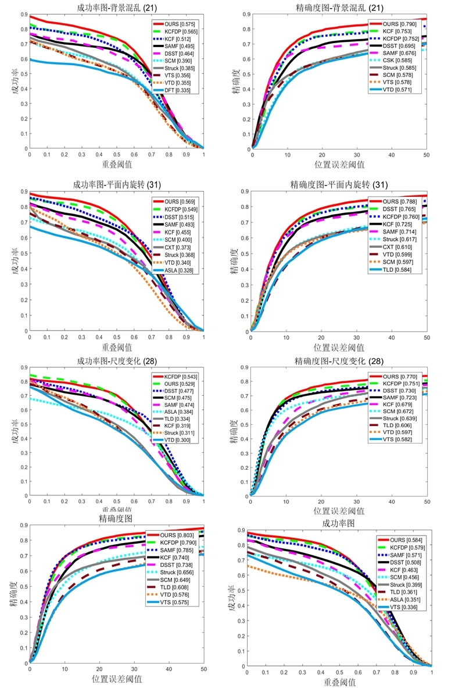
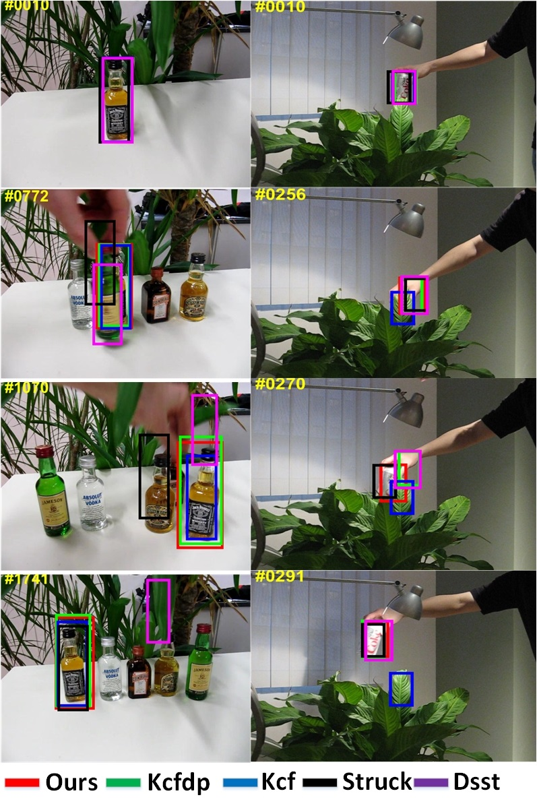

论文与专利
EI期刊《自适应模板更新的尺度核相关滤波跟踪方法》导师外第一作者（投稿）
发明专利《一种基于颜色概率目标建议窗口的核相关滤波跟踪方法 》导师外第一发明人(公开)
论文与专利内容
提出了一种自适应模板更行的尺度核相关滤波跟踪方法，能够在相关滤波框架下稳定的进行尺度估计，提高算法在尺度变化方面的鲁棒性。由颜色直方图概率图和EdgeBoxes生成的目标建议窗口相比单一的EdgeBoxes生成的目标建议窗口具有更高的质量，因此使用此方法可以得到更为准确的尺度估计。同时设计了一种自适应的模板更新方法，通过判断目标跟踪的情况以及目标表观模型和背景的变化程度自适应的调整模板更新学习率。经过实验证明，本算法可以有效的应对相关滤波算法面对尺度变化、大面积遮挡、背景干扰时跟踪漂移和跟踪失败状况的发生，使得相关滤波算法在面对上述问题时能够更加准确的跟踪目标。
部分实验结果图

